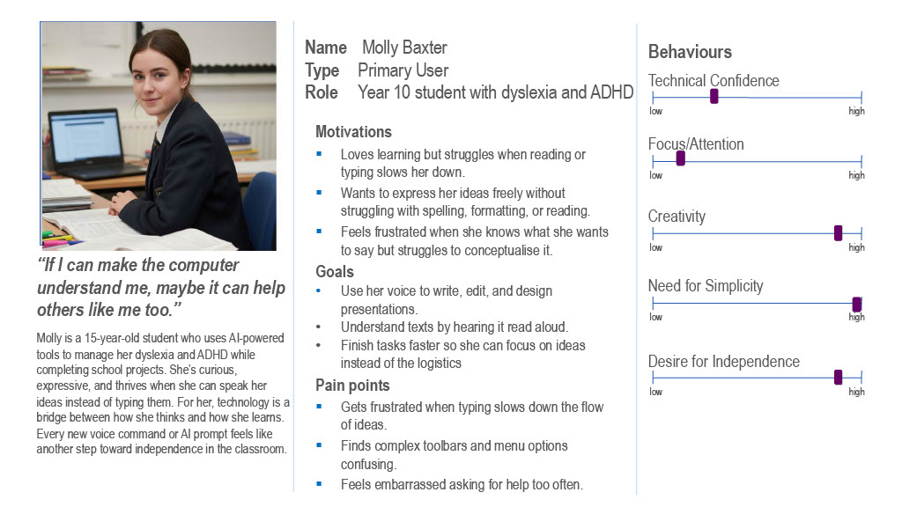
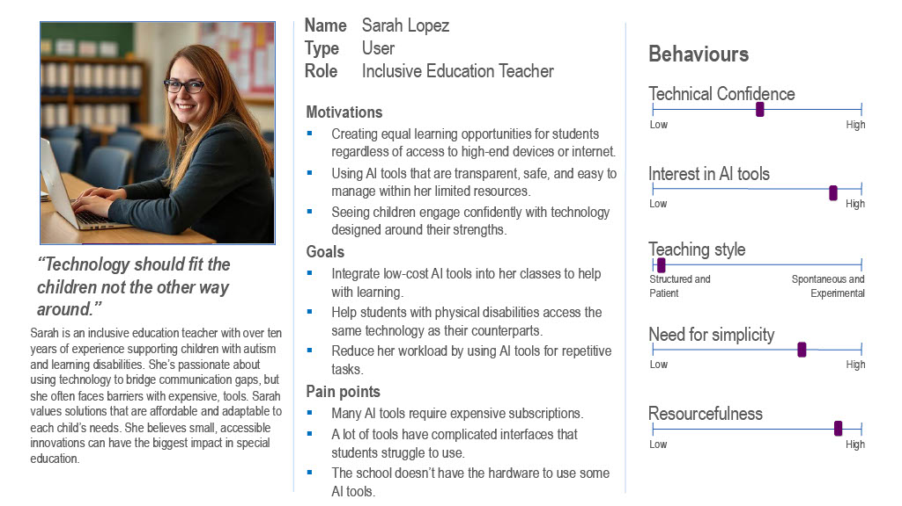

Requirements
Partner Introduction
Intel
Intel is a global leader in semiconductor and computing technology. SmolPC is designed to run on Intel N200-powered laptops, and Intel's support has been instrumental in ensuring our AI pipeline is optimised for low-cost, low-power hardware through OpenVino, Intel's open-source toolkit for efficient AI inference.
Microsoft
Microsoft is one of the world's leading technology companies and a major contributor to open-source software. Microsoft's involvement has supported the development of SmolPC's accessibility features and its integration with open-source productivity tools used in educational environments
IBM
IBM is a global technology and research company with a strong commitment to education and open-source innovation. IBM's expertise in AI and enterprise software has informed SmolPC's approach to building scalable, privacy-first AI tools for real-world deployment.
Project Background
Project Goals
The overarching goal of SmolPC is to deliver a free, offline, open-source AI assistant suite that integrates directly into the software students already use: LibreOffice, CodeHelper, GIMP, and Blender, and runs on low-cost hardware such as Intel N200 laptops costing as little as £300.
Specifically, SmolPC aims to:
Gathering Requirements
Personas
Based on the information we've collected, we constructed the following personas:
Persona of a Student

Persona of a Teacher

Use Cases
Use Case Diagram

List of Use Cases
| ID | Use Case | Actor | Description |
|---|---|---|---|
| UC1 | |||
| UC2 | |||
| UC3 |
Functional Requirements
| ID | Requirement | Priority |
|---|---|---|
| FR-LO1 | Must have | |
| FR-LO2 | Should have |
Non-Functional Requirements
| ID | Requirement | Category | Priority |
|---|---|---|---|
| NFR1 | Performance | Must have | |
| NFR2 | Security | Must have | |
| NFR3 | Usability | Should have | |
| NFR4 | Maintainability | Should have | |
| NFR5 | Compatibility | Could have |